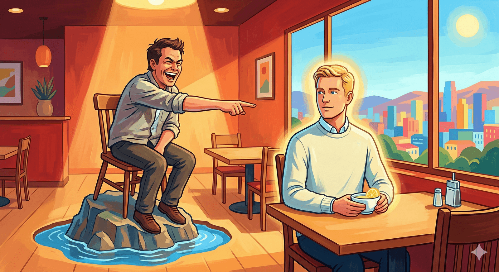

ĐỐI MẶT VỚI NHỮNG ĐIỀU CHƯA BIẾT
Don’t be afraid to ask a question that may sound stupid because 99% of the time everyone else is thinking of the same question and is too embarrassed to ask it.
Câu chuyện thứ 1:
Tôi nhớ có lần, tôi đưa vợ đến một nhà hàng Tây ven đường để ăn bít tết. Nhân viên phục vụ hỏi cô ấy muốn ăn bít tết chín đến mức nào, cô ấy nói muốn chín khoảng tám phần, kết quả cô nhân viên phục vụ mỉm cười khinh thường, rồi lấy đi thực đơn.
Vợ tôi hỏi tôi cô ấy nói sai gì rồi à? Tôi mới bảo, không, có lẽ cô ta đang cười tôi sao trông chẳng ra gì mà lại tìm được một người vợ xinh đẹp như vậy.
Sau đó, lại có một lần, tôi đưa vợ đến một nhà hàng Tây cao cấp để gọi đồ ăn, tôi nói với cô phục vụ rằng tôi muốn món bít-tết chín khoảng tám phần, cô ấy vẫn nở nụ cười ngọt ngào và lấy đi menu mà không hề có bất kì nét mặt khác thường nào khác. Kết quả, món bít tết được đưa lên quả thực được nấu chín hơn bảy phần một chút thật. Cuối buổi, khi tôi đi thanh toán, tôi nhìn thấy trên cột ghi chú ở hóa đơn, người phục vụ viết “bít tết chín khoảng tám phần”.
Đây chính là sự khác biệt giữa những người đã từng trải và những người chưa được nhìn thấy thế giới ngoài kia. Khách hàng là thượng đế, có vài người thực sự thích ăn bít tết chín khoảng tám phần (more than medium well), hơn nữa ở những nhà hàng cao cấp, bít tết thường được đưa lên cùng với một bình rượu vang. Bạn đáp ứng được nhu cầu của tôi, vậy kpi hôm nay của bạn sẽ được thêm vài ngàn, nếu không thể, vậy thì tôi có thể lập tức rời đi. Hiện nay ngay cả các app giao hàng đều hỏi khách hàng có yêu cầu đặc biệt gì về món ăn hay không, vậy mà đến hẳn quán của cô ta ăn, cô ta còn dám cười chê khách hàng? Làm thế không những không có chút tiền tip nào, nếu làm tôi khó chịu tôi còn có thể đi báo với quản lí của nhà hàng.
Câu chuyện thứ 2:
Để tôi kể thêm một câu chuyện nữa nhé.
Cách đây vài năm, một người họ hàng Trung Quốc của tôi đến Singapore thăm tôi. Tối hôm đó tôi đưa chú ấy đi ăn cua sốt tiêu đen. Khi ăn món này ở Singapore, nhà hàng sẽ đưa kèm theo một chiếc bát nhỏ, bên trong đựng nước và chanh, dùng để khách hàng rửa tay sau khi bóc cua. Người họ hàng đó của tôi không hiểu, tưởng là đồ uống nên cầm bát lên nhấp một ngụm, kết quả ngay lập tức thu hút sự chú ý của các bà các cô người Singapore xung quanh. Chú ấy ngơ ngác nhìn tôi, sau đó tôi cũng bưng bát lên uống một ngụm, chú ấy cuối cùng cũng yên tâm rồi tiếp tục ăn cua. Sau đó tôi loáng thoáng nghe thấy tiếng cười đùa của các bà các cô người Singapore xung quanh.
*Chiếc bát mà nhà hàng sử dụng là một chiếc bát thủy tinh tinh xảo đựng chanh và lá bạc hà bên trong. Thoạt nhìn thì hơi giống đồ uống thật.
Người họ hàng của tôi uống bát nước đó vì không biết. Tôi uống bát nước đó là để tránh làm chú ấy xấu hổ, nhưng trong mắt các bà các cô người Singapore, tôi trở thành một kẻ nhà quê chưa từng bước chân ra thế giới, thậm chí còn không phân biệt được giữa nước rửa tay và nước uống.
Những cô gái mà thực sự từng trải ấy, sẽ cảm thấy rằng mình vẫn còn nhiều điều chưa được trải nghiệm. Ngay cả khi nhìn thấy những điều mà mình không hiểu hoặc không biết, họ sẽ giữ một tấm lòng khiêm tốn, sẽ nghĩ rằng có lẽ là do kiến thức của mình vẫn chưa đủ chăng?
Còn những cô gái chưa thực sự đặt chân ra thế giới ngoài kia lại cho rằng mình đã nhìn thấy đủ nhiều, khi thấy người khác làm những việc ngoài tầm hiểu biết của mình, họ sẽ cười nhạo và đòi sửa sai, cho rằng người kia chắc chắn thiển cận mới làm vậy. Những cô gái như vậy cuối cùng sẽ thường bị vả mặt.
Comment:
- Hồi trước, khi mới tiếp xúc với việc đi ra ngoài ăn uống mấy nơi “cao cấp”, tui đã phải lên mạng tìm những bài viết kiểu “nên cầm ly vang thế nào”, “nên ăn món gì trước” để học thuộc đấy.Tui từng có nhiều trải nghiệm không tốt đẹp lắm vì mình thiếu hiểu biết, trông mình “nhà quê”.Sau này khi có điều kiện thử những nơi cao cấp hơn nữa thì tui nhận ra rằng đặc điểm tiêu biểu của nơi cao cấp là làm hài lòng khách.Họ không bao giờ để khách của họ phải cảm thấy tự ti vì nhà quê, vì không biết cái này cái nọ.Dù tui từng đến quán nhiều lần, nhưng nếu gặp những bạn phục vụ mới - người không quen mặt tui, thì trước bữa ăn các bạn ấy luôn hướng dẫn cặn kẽ cách ăn của từng món. Đây là cái gì, anh nên nướng/ăn như thế nào, khi nào thì ăn được, chừng bao nhiêu là ngon. Tui nhớ mãi có lần tới một quán kia, bạn phục vụ đã đứng lại chừng 10p chỉ để giải thích cho tui biết cách phân biệt nấm sống/nấm đã nướng chín. Bản còn mang cả bảng màu ra cho tui so sánh. Màu đổi từ trắng sang ngà ngà như nào thì là chín, nếu nâu sẫm như nào thì là chín quá kỹ, không còn ngon nữa. 🙄Và kể cả khi tui đòi thịt bò chín kỹ vì bàn có trẻ con, họ cũng rất sẵn lòng phục vụ luôn. Không những phục vụ, họ còn ghi nhớ để lần sau ra hỏi tui “hôm nay anh muốn dùng như thế nào”.Tui cũng thoải mái khi hỏi han hoặc nhờ giúp với những thứ không biết làm luôn. Vì tui biết nơi cao cấp không cười tui.
- Nói chung cũng chỉ là tìm cớ để đi khinh người vì những chuyện cỏn con. Có ăn sơn hào hải vị liên tục cũng ko làm người sang lên được, mà vẫn chỉ là dạng giàu xổi bá dơ. Người sang trong cốt cách họ thanh lịch, từ tốn, ko khinh thường người khác vì dăm ba cái thứ vớ va vớ vẩn ấy.
- Bố t đi du lịch với vk ck bác giám đốc công ty lớn, trùng hợp t đang là sinh viên ở ĐN nên gọi ra ăn nhà hàng. T không hiểu chuyện nên lúc phục vụ đưa bill và tiền thừa, t ngồi ngoài cùng cảm ơn đón bằng 2 tay chuyền lại cho bố.Thường sẽ chỉ lấy bill rồi tip tiền thừa, mà t không biết. Bố t cười đưa lại tiền thừa cho phục vụ. Mà phục vụ nhìn thấy 1 2 chục nghìn dư chỉ cười cười lắc đầu. Bố t hỏi ít hả, cũng đủ gửi giữ xe 1 bữa mà. Nhưng nv đứng đó cũng k ai nhận. Người này đùn đẩy người kia. Cũng k biết là ít quá họ k lấy, hay là do hành động lúc đầu lấy bill của t nên họ ngại. Nhưng nói thật lúc đó t quê vl, k ai lấy nên bố t đưa cho t, t ngồi ngoan ngoãn, dù sao sinh viên thời đó cũng đủ tiền mua đc cốc trà sữa. Sau đó bác giám đốc khen t ngoan, lì xì 1tr. Xong còn nhờ nhân viên gói đồ ăn thừa vào bọc lại cho t cầm về phòng trọ. đúng người càng giàu càng giản dị. Lần sau mỗi năm t đều đi ăn cùng bố ở nhà hàng đó. Mà tip họ vẫn nhận bình thường.
- Mình nghĩ chúng ta ai cũng đều có những cái “quê” khiến ta “tự ti” ấy. Như việc bước vào một quán lạ và không biết nên chọn gì, làm gì, hành xử ra sao; hoặc bắt đầu một cuộc nói chuyện về chủ đề mà ta chưa từng hiểu về nó nhưng lại được yêu cầu trình bày về quan điểm của mình… Khi trước mình nghĩ chỉ có mỗi bản thân mắc chứng “sợ sai” nên không dám nói, dám làm, luôn nấp sau lưng người khác; nhưng hóa ra ai cũng vậy, ai cũng âm thầm có nỗi “tự ti”, nỗi lo và sợ mắc lỗi như những lần mắc lỗi trước đó. Điều đó là bình thường, đừng giữ góc nhìn tự ti, tự nhục, tự nhụt chí, cứ bình tĩnh thử và bắt đầu, thay đổi cách suy nghĩ, dám nói dám làm, sai thì mở mang đầu óc, có thêm kinh nghiệm là được mà. Hồi xưa có anh kia từng nói thế này, những chuyện không biết là hoàn toàn bình thường, anh ấy cũng chỉ là tình cờ biết trước thôi, giờ ảnh nói cho mình thì mình cũng biết rồi đó. Vậy nên, chỉ cần ta “làm” thì việc “biết” chỉ còn là vấn đề thời gian.
- _Có lần đi mua đồ ăn t có gặp chú lớn tuổi có lẽ được con cháu nhờ mua giúp mấy món ăn của giới trẻ ấy, chắc là chú mới đi làm về nên quần áo không được tươm tất chứ không phải bẩn nhé. Chú quên nên diễn tả cho chủ quán về món ( chú nói chuyện lịch sự nha )mà có vài bạn trẻ ở đó lại lén cười cợt cách nói chuyện của chú, chê bai một cách rất vô duyên ấy. Sau khi chú đi chị chủ còn trách khéo mấy bạn ấy nữa, t chẳng hiểu nổi định nghĩa quê mùa hay sang trọng của một số người. Sau chuyện đó là t không bao giờ nhờ người thân mua giúp mấy món đồ của tụi trẻ chúng mình nữa. T sợ nhỡ người thân của mình bị đánh giá như vậy chắc khóc mất
- Lấy cho tôi một phần nướng cháy bếp :D

- Các bn ôi, nếu cta có làm gì ngớ ngẩn vô tri chỉ vì ko biết thì đó rất là bình thg. Ta cứ coi đó là 1 lần trải nghiệm để có bài học vỡ lòng là đc mà. T đã có nhiều lần như thế, vd t ko biết đi xe tay ga kiểu khóa vặn mà chỉ quen đi loại cắm chìa cũ. Thế là khi xe dừng đèn đỏ nó tự tắt máy (do tính năng) t ko biết nổ máy lại như nào, t nhờ người xquanh giúp nhưng ko ai giúp đc ( ngta ko biết thật hoặc ko muốn) cuối cùng t đc đồng ngh cứu cánh. Lúc ấy t cảm thấy mình quê mùa lạc hậu kinh khủng. Nhưng về sau t lại thấy bình thg, vì mình có xe kiểu đó đâu mà biết. Mình ko đc tiếp xúc vs nhiều cái nên ko biết là hiển nhiên. Đc ai chỉ dạy cho thì tốt quá, ko thì từ bài học vỡ lòng mình tự mày mò học tiếp cho rành rẽ thôi
- T làm ở bv, hay gặp mấy cô chú lớn tuổi đi khám bệnh, họ k biết dùng thang máy nên nhiều khi leo thang bộ 4-5 tầng luôn ấy, lần nào gặp t cũng gọi lại hd cho cách xài để đi cho đỡ mệt, cô chú kêu ngại hỏi bị ngta cười nhà quê nên leo thang bộ cho rồi, nghĩ mà thương ghê 🥲
- Đọc cứ thấy tội tội thương thương kiểu gì ấy , lúc CHƯA TRƯỞNG THÀNH nhìn vào còn cười họ được , sau này thấy cảm thông và yêu thương nhiều hơn . Ngày trước đi học có mấy bạn nữ nhà xa chưa được câu điện luôn mà vẫn cố gắng học đến nơi đến chốn vừa về là lên rẫy giúp gia đình cảm thấy ngưỡng mộ thật sự . Mẹ mình hay mấy cô trong xóm bây giờ dùng điện thoại còn không giỏi bằng mấy đứa bé 5 tuổi , bởi sinh ra ở cái thời ăn ấm mặc êm chúng mình rất là may mắn rồi.
- _T ko thấy cái gì là quê hay không quê hết vì mỗi người có hoàn cảnh sống khác nhau…mình không thể vì mình rành một cái gì hơn mà cho là người ta quê mùa được vì cái mình rành hơn chỉ là chiếc bình cá mà mình đã ở đó từ nhỏ rồi :> , giống như kiểu họ có thể không rành ăn cái này cái kia nhưng họ có thể phân biệt được rau này hay rau kia ăn được trong cái đám mà mình nghĩ là cỏ dại á và cả như khi đi hái nấm nữa, lúc đó thì đâu cần biết cách gọi steak chín ra sao đâu có cần như việc biết liệu ăn hay hái nấm kia có hẹo không đâu! Còn cái bản phục vụ có thái độ với khách mới là đồ quê mùa, làm việc không chuyên nghiệp trong chính cái nghề mà luôn đòi hỏi sự chuyên nghiệp, cái việc mà bản ngày nào cũng làm mà còn làm không được mới là quê mùa 😕
- Trong lễ tân ngoại giao bọn mình học, có dòng nhắc là nếu phía đối phương cầm ly khác với các quy tắc vừa học, thì mình có thể thực hiện như họ. Như vậy cũng giúp bên kia thoải mái và tạo mối quan hệ thêm tốt hơn.
- Toi k hút vape, có lần trong đám có người bạn nào đấy hỏi ủa có ai mang dầu không, thế là toi la lên có rồi rút ra chai dầu bà ngoại
- t làm nhiều cái ngố lắm, nhưng thay vì cười nhạo t, ny hiện tại âm thầm bảo vệ cái lòng tự tôn bé nhỏ của t ở nơi công cộng, về mới dạy t như thế này thế kia. Ngoài gia đình ra, những người được t nhận định là quý nhân của đời t thì ổng là 1 trong số đó. Kể cả sau này có thành hay ko, t vẫn sẽ kính trọng ny này của t.
- Nhà t không phải nhà khá giả gì, tầm trung một tí thôi, nhưng vì nhà nghèo từ nhỏ nỗ lực đi lên nên cái gì giống steak được coi như đồ của quý tộc ý. Xưa cũng ăn bò bít tết, nhưng thực ra nó là món bánh mì chảo, mọi người đi ăn gọi nó là bò bít tết, sau này mới biết bò bít tết sẽ có ăn kèm khoai tây với cái rau gì dài dài ấy quên mất tên. Họ hỏi mình về rare steak bằng tiếng anh, mình thành thật bảo mình không biết và nhờ họ giải thích, họ nói bằng tiếng việt, cuối cùng mình hiểu vấn đề do nó cũng hao hao ăn phở bò tái chín hay chín tới kiểu vậy. Bàn bên cạnh họ cười mỉa mình thối mũi, chê không cùng tầng lớp mà học đòi văn vẻ a dua. Ý là quán đó bán steak rẻ loại bình dân combo 259k🥲 mình k nghĩ nó lại được đánh giá cao tới nỗi trở thành 1 tầng lớp lun hic
- Đã từg gặp 1 vụ tươg tự ở quán cf gần nhà. Khách trc’ t order cf latte. Nv hỏi khách muốn lấy đá viên hay đá xay,khách tl đá viên xog hai đứa nv phá lên cười nói với nhau rằng TAO BIẾT NGAY MÀ.Khách mới hỏi lại biết là biết cái j tụi nó kêu kcj, cái khách kêu thôi khỏi làm nữa r đi luôn.Tới lượt t t thấy chướg mắt nên t nhiều chiện.T nói khách họ ko biết thì nv kp hướg dẫn khách để khách uốg cho ngon sao. S hai đứa thái độ kỳ cục v,tụi nó ko tl. Tụi nó chửi t biến đi. Tao ko bán cho mày. Hảo nhân viên :))). Hai đứa đó cỡ 19-22t, xog t cũg đi luôn. Quán quen nhưg never comeback
- Hôm mình đi phòng golf trong nhà ở chamvit tower trần duy hưng, thường nó sẽ tặng nước suối hoặc cafe, mà bồ mình ổng uống cafe xong tối khó ngủ nên ổng tự bảo uống nước. Mình nói bé phục vụ là 2 nước rồi, sau một đứa khác bưng vào cafe mình nhắc là nước suối em ơi, nó không nói với mình mà dùng tiếng Hàn hỏi ổng, xong bảo ủa cafe mà, mình nói chị đã nói nước là nước, ổng thấy mình căng nên bảo free mà kệ đi, mà nó kiểu chẳng có tí tôn trọng gì mình luôn. Cái t về nhà report với hội các bà vợ cho cấm chồng đến đấy đánh luôn.🙂 lần sau t đến sẽ lại gọi y vậy để nó lại mang cafe ra xong t sẽ report thẳng với quản lí. Thứ hamlon
- ê tôi vẫn ko hiểu, order steak chín 8 phần là cực kì cụ thể, là “tôi muốn ăn steak chín hơn medium rare một chút xíu”, như thế dễ dàng hơn cho đầu bếp, sao lại cười họ nhỉ =)))))))))))) thích phán xét mọi người dựa trên kiến thức của bản thân, nhưng có chắc bản thân mình biết được tất cả mọi kiến thức trên đời không, biết đâu một ngày đẹp trời chính mình lại bị quê vì một cái manner nào đó mà mình chưa kịp học đấy =))
Phân tích:
Đối mặt với những điều mình không biết là một phần tất yếu của cuộc sống. Cảm giác ngượng ngùng khi không biết điều gì đó là hoàn toàn bình thường. Tuy nhiên, có những cách để bạn tự tin hơn khi đối diện với những tình huống như vậy:
1. Thừa nhận sự không biết:
- Thành thật: Thay vì cố gắng che giấu, hãy thẳng thắn thừa nhận rằng bạn không biết. Điều này thể hiện sự chân thành và tạo ra sự tin tưởng.
- Tò mò: Thể hiện sự tò mò về chủ đề đó. Điều này cho thấy bạn sẵn sàng học hỏi và mở lòng.
2. Hỏi:
- Đặt câu hỏi: Đừng ngại hỏi những câu hỏi liên quan đến vấn đề bạn không hiểu.
- Nghiên cứu: Tìm kiếm thông tin từ nhiều nguồn khác nhau như sách, bài báo, hoặc hỏi những người có kinh nghiệm.
3. Học hỏi:
- Tìm hiểu: Đọc sách, tham gia các khóa học, hoặc tìm kiếm thông tin trực tuyến về lĩnh vực bạn muốn tìm hiểu.
- Thực hành: Áp dụng những kiến thức mới vào thực tế để củng cố hiểu biết.
4. Thay đổi suy nghĩ:
- Thay đổi quan niệm: Không phải ai cũng biết tất cả mọi thứ. Việc không biết một điều gì đó không làm bạn kém cỏi hơn.
- Tập trung vào quá trình: Thay vì lo lắng về việc không biết, hãy tập trung vào quá trình học hỏi và khám phá.
5. Xây dựng sự tự tin:
- Tin vào bản thân: Mọi người đều có những điểm mạnh và điểm yếu riêng. Hãy tin vào khả năng học hỏi và phát triển của bản thân.
- Thực hiện những việc nhỏ: Bắt đầu với những việc nhỏ và dần dần tăng độ khó. Điều này giúp bạn xây dựng sự tự tin.
Một số lưu ý khác:
- Tạo không khí thoải mái: Khi đặt câu hỏi, hãy tạo không khí thoải mái để người khác dễ dàng chia sẻ kiến thức.
- Lắng nghe: Chú ý lắng nghe câu trả lời và đặt câu hỏi tiếp theo nếu cần.
- Không sợ sai lầm: Sai lầm là một phần của quá trình học hỏi. Đừng quá lo lắng về việc mắc lỗi.
Ví dụ:
Thay vì nói “Tôi không biết gì về điều này”, bạn có thể nói: “Tôi rất tò mò về chủ đề này, có thể bạn cho tôi biết thêm một chút về nó được không?”
Tóm lại, đối mặt với những điều mình không biết là một cơ hội để học hỏi và phát triển. Hãy tự tin, tò mò và sẵn sàng khám phá những điều mới.
🔍 Phân tích bài viết
📌 Tóm tắt ý chính
Bài viết dùng hai câu chuyện thực tế (gọi bít-tết chín tám phần, uống nhầm nước rửa tay) để khai thác chủ đề: sự khác biệt giữa người khiêm tốn chấp nhận mình chưa biết và người tự cao cười nhạo người khác. Kết luận: người thực sự từng trải mới biết mình còn thiếu sót bao nhiêu — kẻ cười nhạo kẻ khác thường chính là kẻ ít trải nghiệm hơn.
🗺️ Mindmap
💡 Insight & Góc nhìn đa chiều
Hiệu ứng Dunning-Kruger ẩn hiện rõ nét trong bài: người biết ít thì tự tin thái quá, người biết nhiều lại thấy mình còn thiếu sót. Cô nhân viên cười khách gọi bít-tết “chín tám phần” chính là minh họa hoàn hảo — cô chưa biết đủ để biết mình đang sai.
Điều sâu sắc hơn: câu chuyện nhà hàng cao cấp vs nhà hàng bình thường không chỉ nói về dịch vụ — mà nói về văn hóa tổ chức. Nơi cao cấp đào tạo nhân viên để khách không bao giờ phải cảm thấy xấu hổ. Đây là triết lý kinh doanh “khách hàng luôn đúng” ở cấp độ cảm xúc.
Phần comment của độc giả là linh hồn bài viết — tập hợp những câu chuyện “ngố” thật sự tạo ra sự đồng cảm và cộng đồng. Điều này cho thấy bài viết thành công ở chỗ tạo ra không gian an toàn để người ta thừa nhận sự không biết.
🇻🇳 Liên hệ Việt Nam
& cá nhân Văn hóa “sĩ diện” của người Việt (sợ bị coi là “nhà quê”) là rào cản lớn cho việc học hỏi. Nhiều người không dám hỏi vì sợ bị cười — dẫn đến làm sai, hiểu sai còn hơn là hỏi.
Thực tế rõ ràng trong môi trường làm việc Việt: nhân viên mới không dám hỏi cấp trên vì sợ bị đánh giá năng lực kém. Học sinh không dám giơ tay hỏi thầy cô. Kết quả: vấn đề tích tụ, sai lầm lớn dần. So sánh với văn hóa Nhật (có khái niệm “nemawashi” — hỏi trước, đồng thuận trước) hay Israel (văn hóa chutzpah — dám hỏi, dám tranh luận với cả người trên) — đây là lợi thế cạnh tranh thật sự.
⚖️ Phản biện
Bài viết hơi một chiều khi dùng “nhà hàng cao cấp” làm chuẩn mực. Không phải mọi thứ “cao cấp” đều đúng, không phải mọi thứ “bình dân” đều sai. Cô nhân viên cười khách có thể đơn giản là thiếu đào tạo chuyên nghiệp — không nhất thiết là “chưa nhìn thấy thế giới”.
Hơn nữa, bài cũng có thể bị hiểu lệch thành: cứ đến nơi đắt tiền là người có văn hóa, cứ ở lại quán bình dân là “nhà quê”. Phần comment có người đã chỉ ra điều này — “người sang trong cốt cách, không phải nơi ăn chỗ ngồi”.
Kiến thức về nghi lễ nhà hàng, cách cầm dao nĩa, rare/medium steak là kiến thức văn hóa giai cấp (class knowledge) — không phải đạo đức hay trí tuệ. Không biết không có nghĩa là kém, chỉ là chưa được tiếp cận.
📖 Giải thích thuật ngữ
- Dunning-Kruger effect: Hiệu ứng tâm lý học: người kém năng lực thường tự đánh giá bản thân cao hơn thực tế, vì họ thiếu nhận thức meta (không biết mình không biết gì). Người giỏi lại thường tự đánh giá thấp vì họ thấy rõ giới hạn của mình.
- Rare / Medium / Well-done steak: Thang độ chín của bít-tết: Rare (còn đỏ, ăn tái), Medium Rare (hồng bên trong), Medium (hồng nhạt), Medium Well (gần chín), Well Done (chín hẳn). Không có chuẩn nào đúng hay sai — chỉ là sở thích.
- Nước rửa tay (finger bowl): Phong tục phục vụ ở nhà hàng hải sản/bít-tết cao cấp — bát nước nhỏ có chanh và lá thơm để rửa tay sau khi ăn. Từng gây nhầm lẫn ngay cả với tầng lớp quý tộc châu Âu thế kỷ 19.
- Tip (tiền bo): Khoản tiền khách tự nguyện thêm cho nhân viên phục vụ, thể hiện sự hài lòng. Phổ biến ở Mỹ (bắt buộc ngầm), ít phổ biến hơn ở Việt Nam và nhiều nước châu Á.